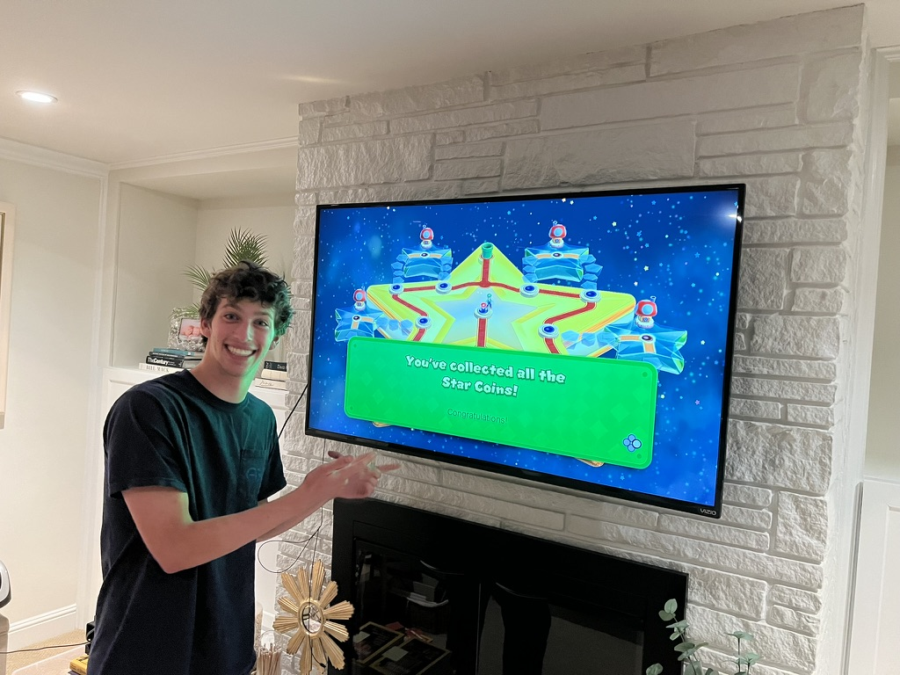

Welcome to the Luke's website!

Hi, my name is Luke (he/him), and I'm from just north of San Francisco (Marin County). I'm a third year computer engineering major. I love to read (currently reading Three Body Problem series) and play video games (R6 and Valorant even though I hate R6). To stay active, I like to play basketball at the rec or go on a walk around my neighborhood. One day, I would love to become a film director Thank you for taking a look at my website!